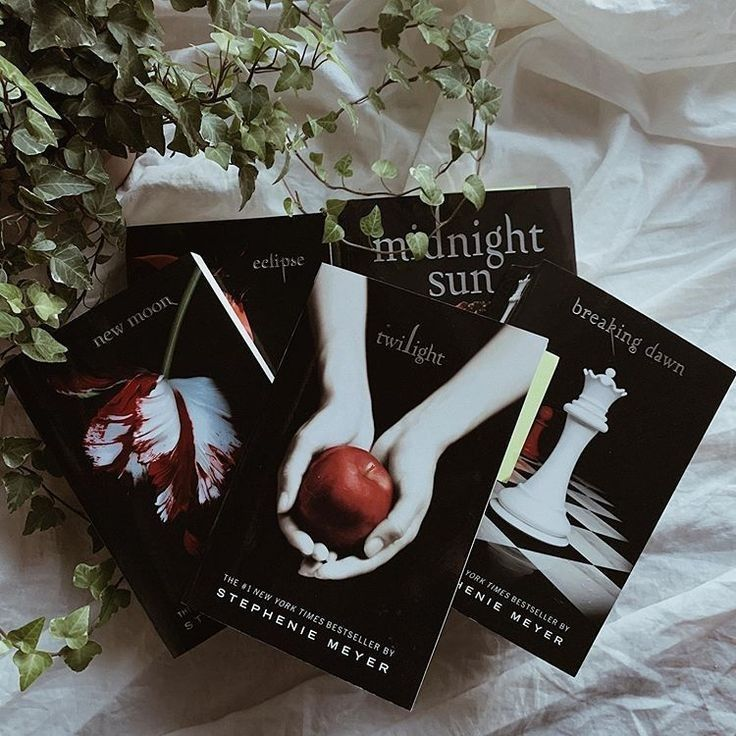

☆♡ Overview ♡☆
The Twilight Saga is a series of five novels by Stephenie Meyer that explore themes of love, identity, sacrifice, and destiny through the lens of a supernatural romance. At its core, the series follows Bella Swan, a seemingly ordinary teenage girl who falls in love with Edward Cullen, a vampire struggling with his nature. The books examine the intense and often dangerous love between a human and a creature who thirsts for her blood, creating a tension-filled romance where desire and restraint are constantly at odds. As the series progresses, Bella is forced to confront questions of mortality, belonging, and transformation, especially as she is drawn into a world of supernatural beings, including Jacob Black, a childhood friend who belongs to a tribe of werewolves—natural enemies of vampires.
The saga delves into the complexities of love triangles, personal sacrifice, and the consequences of choices, particularly as Bella must decide between her human life and a future with Edward. The books also explore themes of loyalty and conflict, as the vampire and werewolf worlds collide, and an ancient governing body, the Volturi, enforces strict laws that threaten Bella and those she loves. By the final book, the series examines ideas of family, motherhood, and empowerment as Bella fully embraces the supernatural world she was once an outsider to. Through its blend of romance, fantasy, and action, The Twilight Saga became a defining work in young adult literature, captivating readers with its emotional intensity and immersive storytelling.
☆♡ The Author & Her Inspiration ♡☆
The Twilight Saga was written by Stephenie Meyer, an American author who had no prior experience in publishing before the series became a worldwide sensation. Born in 1973 in Hartford, Connecticut, Meyer was a stay-at-home mom with a degree in English from Brigham Young University when she had a vivid dream in 2003 that inspired the story of Twilight. The dream featured a human girl and a dazzling vampire in a meadow, discussing their impossible love—this scene would later become one of the most famous moments in the first book. Motivated by the dream, Meyer began writing furiously, completing Twilight in just three months.
Despite her lack of publishing experience, Meyer sent her manuscript to multiple literary agents, eventually landing a deal with Little, Brown and Company, which published Twilight in 2005. The book quickly gained popularity, leading her to expand the story into a four-book saga. Meyer’s writing style is character-driven, focusing on the intense emotions and inner conflicts of Bella Swan as she navigates a world of vampires and werewolves. She has cited classic literature as an influence, particularly Pride and Prejudice (seen in Bella and Edward’s initial tension) and Wuthering Heights (mirrored in the tumultuous, obsessive nature of some relationships in the series).
One of the unique aspects of Meyer’s writing process was her reliance on music, particularly bands like Muse, My Chemical Romance, and Linkin Park, to set the mood while writing. She also took inspiration from real-world locations, with Forks, Washington, becoming a central setting due to its gloomy, overcast weather, which fit the vampire mythology perfectly.
Meyer later attempted to revisit the Twilight universe with Midnight Sun, a retelling of Twilight from Edward’s perspective. However, after an early draft was leaked online in 2008, she shelved the project for over a decade before finally publishing it in 2020. She has since explored other genres, such as science fiction (The Host, 2008), but Twilight remains her most famous and influential work.
Meyer’s impact on young adult literature is undeniable, as Twilight helped launch the modern YA paranormal romance genre. However, her writing has also been polarizing, with some critics pointing out issues in character development, pacing, and certain relationship dynamics. Despite this, the saga’s cultural significance and dedicated fanbase have solidified its place in literary history.